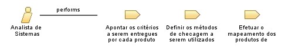

Role: Analista de Sistemas
Relationships

Primary Performs
Apontar os critérios a serem entregues por cada produto de trabalho escolhido
Definir os métodos de checagem a serem utilizados para cada produto de trabalho escolhido
Efetuar o mapeamento dos produtos de trabalho a serem checados, os critérios a serem entregues e os métodos a serem utilizados para a integração com o plano de projeto
Modifies
Artefato que descreve qual método será utilizado para checagem
Artefato que retrata e cataloga os produtos e critérios mais valiosos que farão parte do plano do projeto
Catálogo de junções dos critérios a serem checados e os produtos de trabalho
Process Usage
ProcessoTrabalho2
>
SP 1.1 Eleger Produtos de Trabalho para Checagem
>
Analista de Sistemas